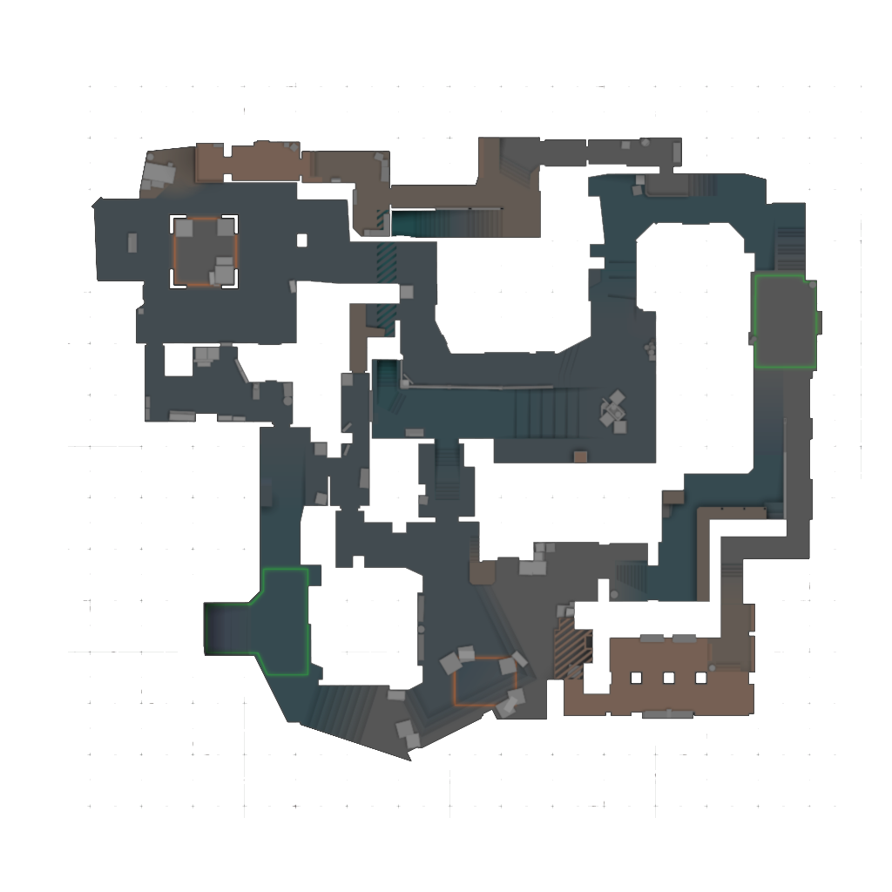

Şampiyonlar, rünler ve eşya dizilimleri; haritalar, infolar ve smoke videoları. Hepsi tek yerde, Türkçe.
Tüm şampiyonların pasifleri, Q/W/E/R yetenekleri ve eşyalar.

Mirage, Dust 2 ve Inferno: radar üzerinde infolar, A ve B için smoke ve flash videoları.
Yeni oyunlar eklenecek.